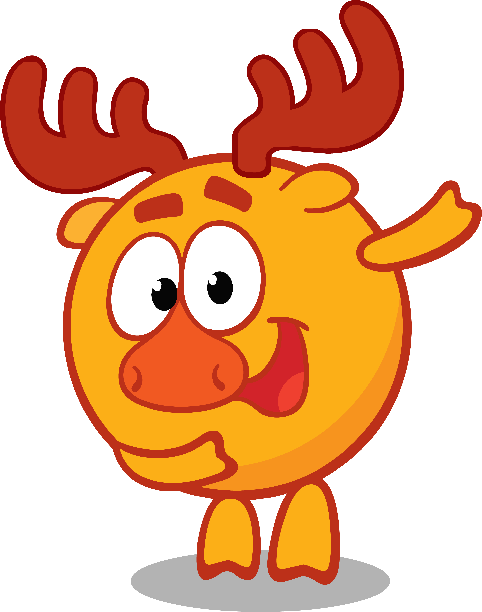
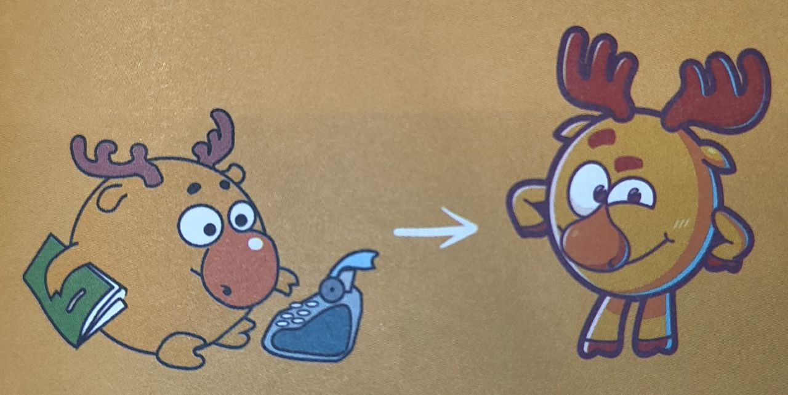
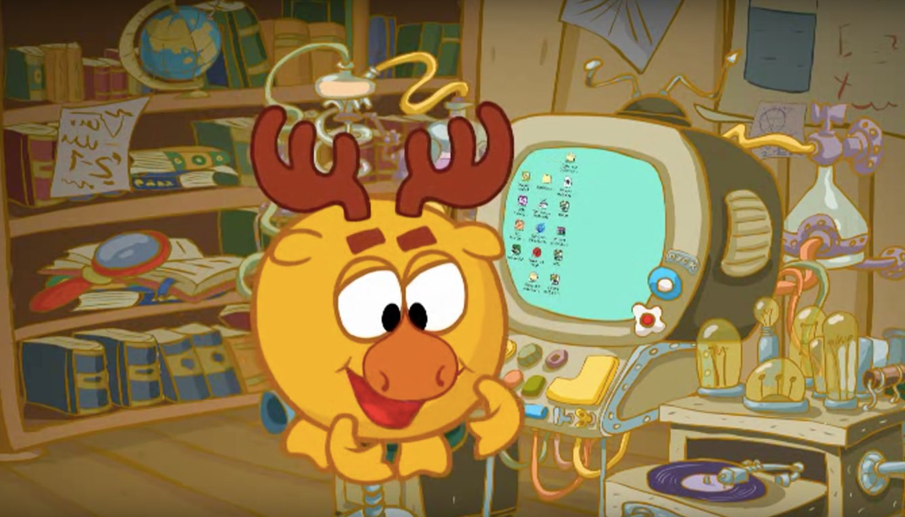
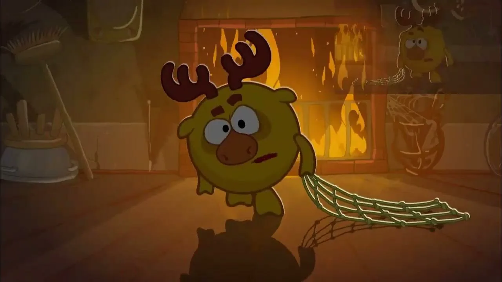

Изначально, ещё во времена «Сластён», Лосяш обладал огромным носом и маленькими рогами. У него была печатная машинка, и вместо того, чтобы отдать себя науке, он пописывал стихи талант, впоследствии перекочевавший к не менее парнокопытному, но более сентиментальному Барашу. А ещё он увлекался историей, коллекционированием и жил в домике старинном шкафчике.

У Лосяша есть вполне реальный прототип из Уфы - поэт Айдар Хусаинов. Представители творческой команды, стоявшей у истоков Ромашковой долины, утверждают, что списывали образ знакомого всем нам Лосяша с известного башкирского стихотворца. И в это несложно поверить - стоит лишь найти видео с ним в сети.
Безобидный гедонист и гиперреалист с уклоном в эзотерику, учёный, айтишник, лауреат Нобелевской премии и просто славный малый. Хулиганскую юность опустим об этом поведает его альтер эго в серии «Невоспитанный клон». Лосяш бывает высокомерен («друзья мои твердолобые») и рогами и копытами упирается в своё мнение не сдвинешь. При этом упорядоченность мыслей с лихвой компенсирует бардаком в своём домике.

В свободное от работы время у него есть много того, что сделать: он может покачаться на своем любимом гамаке и попить кофе или чая, он может пойти с Копатычем на рыбалку. Он может поиграть в свой компьютер, на котором, на данный момент, четыре игры: «Крутой спуск», «Кто первый?», «Принц для Юши», а также безымянная игра, которая является пародией на «Super Mario Bros», появившаяся в серии «Близко к сердцу».

Лосяш — очень дисциплинированный и организованный лось. У него всегда есть план действий, но не всегда всё идет, как надо. Например, в серии «Путь в приличное общество» Лосяш имел план, чтобы отучиться от бутербродов, но он и по сей день их ест. Лосяш — настоящий оратор, и его речи всегда подчиняются логике. Он реалист (иногда даже гиперреалист), например в серии «Реалист» не мог стерпеть того, что Карыч не нарисовал его дом, который там должен быть. Иногда он занимается медитацией, иногда философствует и даже вывел свою теорию: «от всего, что делаешь, нужно уметь получать удовольствие».
Частое обращение Лосяша «друг мой... такой-то» и «такие-то... вы мой» - это отсылка к герою Валентина Гафта в фильме Эльдара Рязанова «Гараж» (1979).